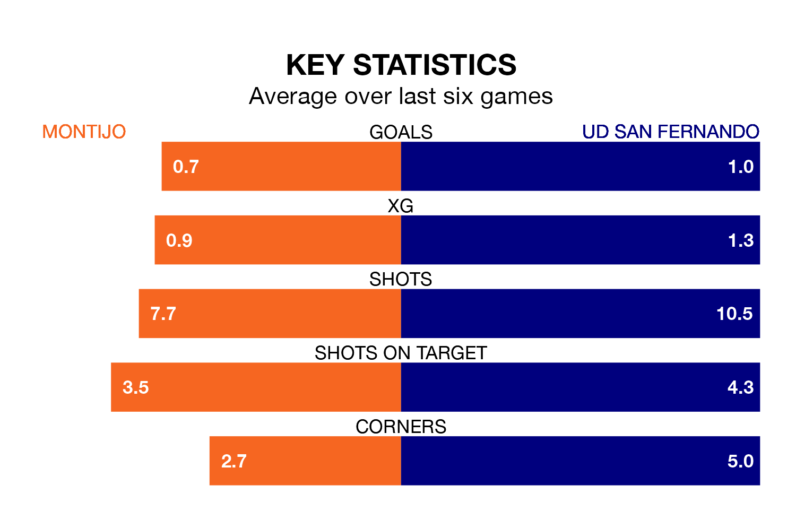

Montijo host UD San Fernando on Sunday at the Estadio Municipal Emilio Macarro Rodriguez in the Segunda División RFEF Group 5.
In their last league match, on March 9, Montijo lost to Guadalajara 2-1 away, with their goal scored by Víctor Manuel Castaño Terrazas.
San Fernando won, 1-0 at home against Gimnástica Segoviana CF on March 10, with Stéphane Serbourdin Cruz scoring their goals.
Montijo are bottom of the table after 26 games, of which they have won six and drawn four, earning 22 points.
San Fernando are five places ahead of the home team in 13th, with eight wins and seven draws putting them on 31 points.
Montijo are in disappointing form in the Segunda División RFEF Group 5, with two wins and four losses from their last six games.
With three wins and two draws over that period, the visitors' form is better – they have taken 11 points from 18, compared to Montijo's six.
With 20 goals in 26 games so far this season, San Fernando are the league's second-lowest scorers with 0.8 goals per game. And they are conceding at an average rate, letting in 28 goals at a rate of 1.1 per game.
The hosts are also below average scorers, with 0.8 goals per game, compared to a league average of 1.1. They have conceded 1.5 goals per game.
In the last three years, Montijo and San Fernando have played each other on three occasions. Montijo won all of them.
Their last meeting was on November 5, when Montijo won 2-0 away.
Updated: 15:10 (UTC), 15/03/24